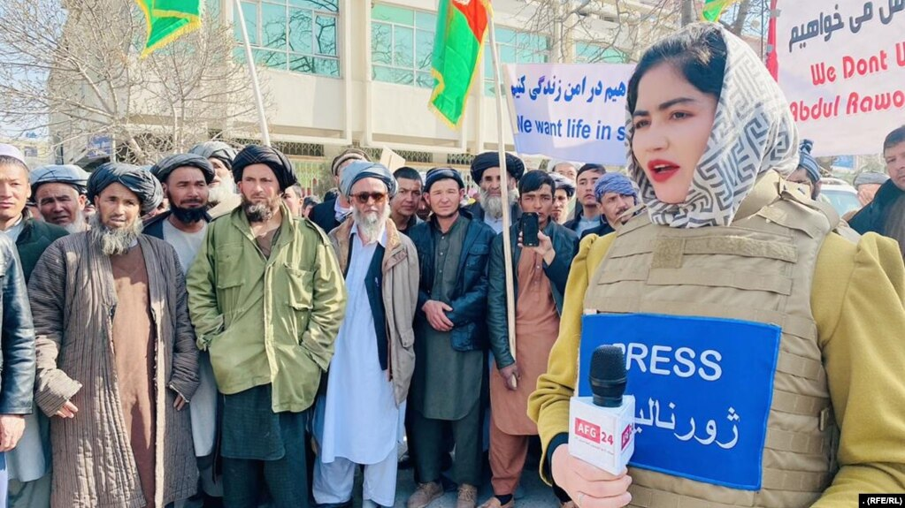
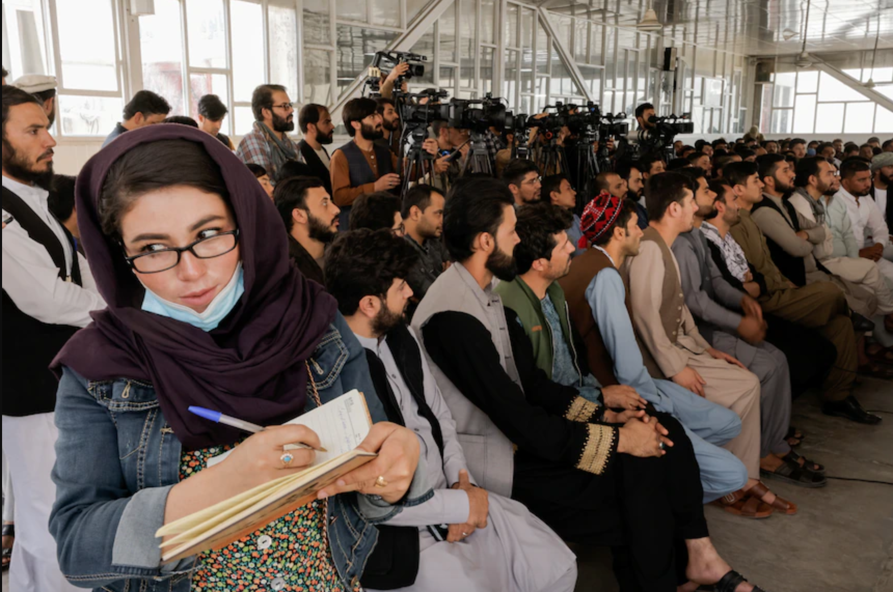
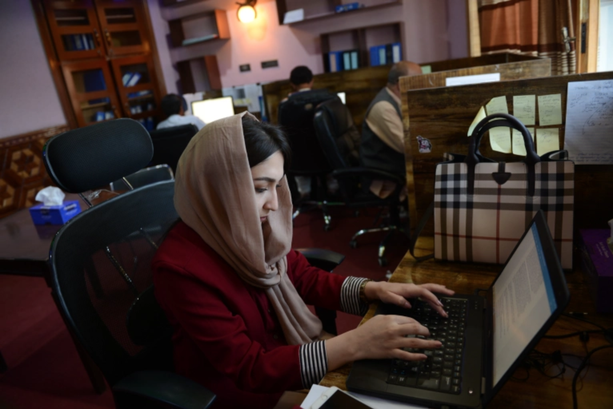

Many are fleeing or in hiding. Women, some locked out of their outlets, are in particular danger.
By Janine di Giovanni

Mahbuba Muhammadi, a former correspondent for Salam Watandar Radio in Mazar-e Sharif, quit her job and left Afghanistan after receiving "incessant" threats from the Taliban. | Photo and caption from RFE/RL's Radio Azadi
The former Afghan country director of the Institute for War and Peace Reporting (IWPR) fled Afghanistan last week. He was lucky. He took his family, packed a single bag of clothes, and got out before the Taliban walked into Kabul last weekend.
The plight of a refugee is miserable. This man, who no longer wants his name to appear in public, knows he has “lost everything.” But he’s more concerned about the people he left behind. A few weeks ago, he saw a Taliban-affiliated website labeling IWPR, an organization that trains local journalists around the world, as a “Western anti-Islamic foreign organization.”
“Afghanistan’s flourishing media scene, one of our greatest achievements, is in particular danger.”
– Former Afghan IWPR director
“Our former colleagues are at very serious risk,” he wrote to IWPR’s board members, including me. “And they know it. I have been spending days and nights on the phone to people. Female journalists are in tears, desperately worried.” His greatest fear is that “Afghanistan’s flourishing media scene, one of our greatest achievements, is in particular danger.”
When I first walked into Kabul in November 2001 after following the U.S.-backed Northern Alliance for two months as it fought its way toward the capital, there was essentially no free press. Kabul was in a state of trauma from six years under Taliban rule. Poverty, repression, and fear were at an extreme level.
 Journalists hold placards during a protest against the killing of Malalai Maiwand, a 26-year-old broadcast journalist who was gunned down outside the Enikass TV station in December. | Photo from Ghulamullah Habibi/EPA, via Shutterstock, caption from the New York Times
Journalists hold placards during a protest against the killing of Malalai Maiwand, a 26-year-old broadcast journalist who was gunned down outside the Enikass TV station in December. | Photo from Ghulamullah Habibi/EPA, via Shutterstock, caption from the New York Times
In the two decades since the fall of the Taliban, Afghanistan built an extensive media scene, with female journalists taking a bold, highly visible role. Saad Mohseni, the Afghan Australian owner of the Moby Group, Afghanistan’s largest media company, was one of the people who helped build it up, training reporters and setting up news channels including Tolo News, Afghanistan’s premier 24-hour news service. He recently wrote in the Washington Post that after the collapse of the Afghan government, the Taliban asked Tolo to keep broadcasting. But he’s not sure for how much longer. “The world has to remain engaged with both Afghanistan and the Taliban to ensure that the gains of the last two decades are not reversed,” Mohseni told me. “These gains include women’s rights and freedom of expression.”
No one can predict the future of Afghanistan’s free press. So far, the Taliban are trying to prove they are more moderate now than they were during their brutal reign two decades ago. They are branding themselves as a sort of Taliban 2.0—with social media savvy, a suave spokesperson, and a media team crafting spin. As far as extremist groups go, they are following in the footsteps of the Islamic State, which also excelled at social media. In the past few chaotic days, the Taliban have even been giving press conferences to Afghan journalists and a few remaining foreign ones.
On Tuesday, Tolo News anchor Beheshta Arghand, wearing a black hijab but with her face uncovered, sat a few feet away from a Taliban official in a TV studio. She began by asking him tough questions about security in Kabul, where house-to-house searches had been reported. But the content was less memorable than the fact that this interview was historic: It was the first time in Afghanistan’s history that a female presenter appeared live in a TV studio with a Taliban representative.
Watching Arghand’s confidence as she fired off questions, I remember chilling stories from the past: In the late 1980s, mujahideen fighters—many of whom became Taliban in later years—sexually accosted female Afghan journalists with impunity. One report that made the rounds was of a fighter who essentially kidnapped a female journalist as she left the studio to go home after her shift. She had just appeared on television with a bare face and no burqa.
The soldier grabbed her by the arm and simply said she would be his that night. In his reptilian mind, she wasn’t wearing a burqa—and therefore he had the right to claim her. Good girls wear burqas, these men thought. The other kind show their faces.
Murdered Afghan female journalists
One hopes that two decades’ distance, access to the internet, and the need to ingratiate themselves with the West to access aid money may have softened their misogynist instincts and disdain for the free press.
In the most recent index released by Reporters Without Borders, Afghanistan ranked 122nd out of 180 countries on press freedom. But since the intra-Afghan peace process began in September 2020, there has been a rise in threats and targeted killings. Journalists have found their work harder to do and became more fearful. In recent months, hundreds of reporters, seeing the Taliban gain more ground in the provinces, have either left the country or quit working. According to Reporters Without Borders, around 100 Afghan media outlets have stopped operating in recent weeks as most journalists have gone into hiding or are trying to flee the country.
“I went to the office, but I was not allowed in. Later, other colleagues were banned, too. We talked with our new director, who has been appointed by the Taliban.”
– Shabnam Khan Dawran, female anchor at Radio Television Afghanistan
Others have tried to continue reporting. Shabnam Khan Dawran, an anchor at Radio Television Afghanistan, said the Taliban had barred her—but not her male colleagues—from entering her office to continue her work. “I wanted to return to work, but unfortunately they did not allow me to work,” she said, according to Tolo News. “They told me that the regime has changed and you cannot work.” This was echoed by Khadija Amin, another female journalist at the same station, who said the Taliban also banned her from working. “I went to the office, but I was not allowed in. Later, other colleagues were banned, too. We talked with our new director, who has been appointed by the Taliban.”
In a statement issued this week, Reporters Without Borders wrote: “The media outlets still operating are doing so in accordance with the conditions set by the country’s new masters.”
All this means that these truth tellers—these “sparks of hope,” as former U.S. Ambassador to Afghanistan Ryan Crocker and RFE/RL President and CEO Jamie Fly called Afghan journalists—must be protected.

Most female journalists have been forbidden to work and told to stay home. | Photo from Reuters: Jorge Silva, caption from Australian Broadcasting Corporation
So far, we have no hard indication of what the Taliban will actually do in the future. But most of us who remember their first incarnation—the stadium beheadings and amputations, the executions, the women whipped for showing ankles—fear they will return to their extremist past. The Taliban, meanwhile, are working overtime to present a different image to the world. Their public faces are moderate-sounding officials, schooled in Pakistan, at home on Facebook and Twitter.
This new public face of the Taliban is “laughable” and “just PR,” British parliamentarian Tom Tugendhat told Times Radio. Tugendhat knows Afghanistan better than most—he served in the British Army there, speaks Pashto, and infiltrated remote villages in Helmand province to map tribal territories. He is convinced the Taliban have not changed.
For the sake of a free Afghan press—and the many brilliant and courageous women and men working as journalists in Afghanistan—I hope Tugendhat is wrong.
Like most journalists who’ve worked in Afghanistan, I could not have done my job without the help of local reporters. My heart goes out to them, and I hope they are safe. In the United States, major newspapers such as the Washington Post, the New York Times, and the Wall Street Journal have called directly on U.S. President Joe Biden to help evacuate the Afghan journalists who have worked with the outlets and are in danger. Fred Ryan, the publisher of the Post, wrote to U.S. National Security Advisor Jake Sullivan on Monday, pleading that the outlets’ reporters be moved from the civilian side of Hamid Karzai International Airport, where they are sheltering, to the military side, where they can be better protected.
Reporters Without Borders is hoping the United Nations Security Council—which has adopted two resolutions on the protection of journalists—can play a decisive role in ensuring the safety of journalists and the ability of the media to work in Afghanistan.
Even before the Taliban takeover last weekend, Afghan journalists faced terrible ordeals. For many years, they have been witness to horrific conflict, including car bombings and suicide attacks. Many suffer deep trauma. Unlike Western war reporters, who have frequent home leave, where they can be debriefed or receive therapy for post-traumatic stress disorder, or PTSD, little support is available to their Afghan counterparts.
Anthony Feinstein, a psychiatrist and author who has devoted a lifetime to studying and treating PTSD among reporters and photojournalists, was just beginning to work with Afghan journalists before the Taliban takeover. He is concerned now about the lack of assistance for the locals. “Years of exposure to violence left Afghan journalists with high rates of PTSD and depression,” Feinstein said from his home in Canada. “And that was before the collapse of the Afghan government. The situation now is likely to be much bleaker still, with added threats to personal safety and few if any resources to provide much-needed therapy.”

Bushra Seddique worked a journalism job in Kabul, Afghanistan in July 2021 | Photo and caption information from Barialai Khoshhal/Al Jazeera
In the best-case scenario, we can hope that the journalists who truly need to leave—who might face serious retaliation once the Taliban settle in—are allowed safe passage. The ones who decide to stay should be supported and monitored so that they remain safe and are allowed to continue to do their work.
The often quoted dictum that “journalism is the first rough draft of history” has never been more poignant than during these dark days in Afghanistan after the fall of the Kabul government. We need our colleagues on the ground, now more than ever. But we also need them alive, safe, and confident they can do their job without being harmed.
Janine di Giovanni is a columnist at Foreign Policy, a senior fellow at Yale University’s Jackson Institute for Global Affairs, the winner of multiple journalism awards, and the author of The Vanishing: Faith, Loss, and the Twilight of Christianity in the Land of the Prophets. Twitter: @janinedigi
Additional reading
They Were Journalists, and Women, and Targeted for Both
Afghan Women Demand Their Rights Under Taliban Rule
After Fleeing Afghanistan, These Women Are Building A Life Together in Northern Virginia
Afghan Journalists Face Threats and Beatings Despite Taliban Promises of a Free Press